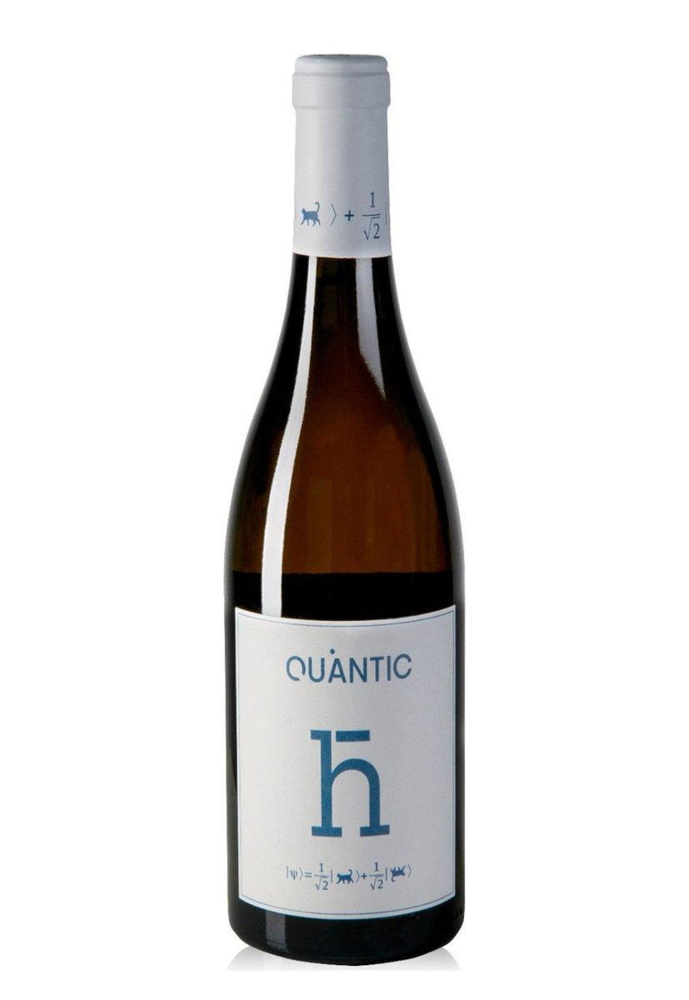
Quàntic · White
Lise Meitner
2025 · Garnacha Blanca
White fruit and peach on the nose, fine minerality, and a lovely tension and freshness on the palate.
Gaianes · Comunitat Valenciana
Wines from a restored 18th‑century cellar in the mountains of inland Alicante, in Spain’s Levante — made by three quantum physicists.
Lise Meitner · Max Born · El·lipse
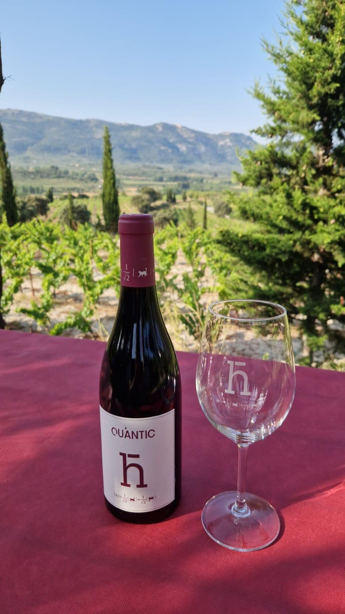

The land
Our vines grow in Gaianes, Agres and Cocentaina, in the mountainous interior of the Comunitat Valenciana — among holm oaks, pines and cypresses, beneath Mariola, Benicadell and Montcabrer, under the Mediterranean light.
At harvest, days reach 24–29 °C while nights in Agres fall to 9–12 °C. The cool nights let the vines rest and keep the fruit fresh and aromatic. Bringing abandoned micro‑vineyards back into cultivation keeps the landscape alive.
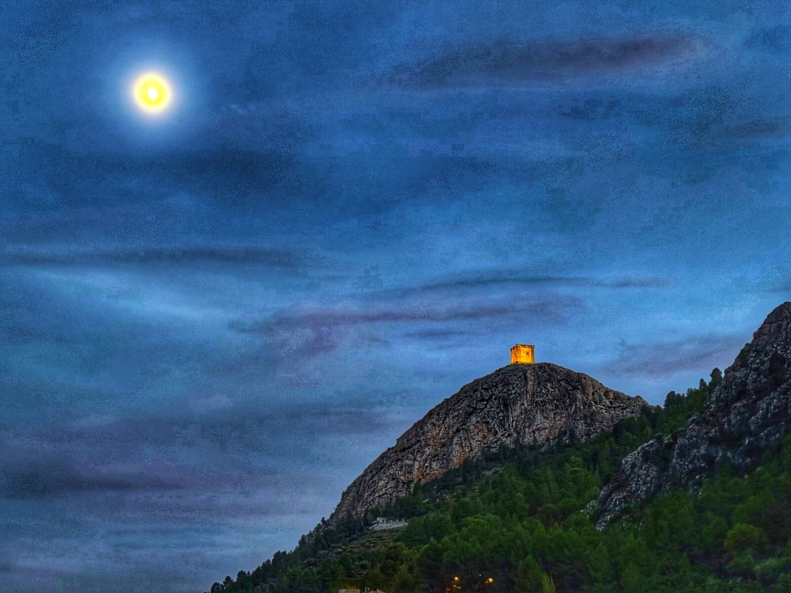
The celler
In a restored 18th‑century cellar in Gaianes, at the foot of the Benicadell, we make wine the artisanal way, from grapes picked by hand in our own vineyards and fermented in the original century‑old concrete tanks, under the old wooden beams.
Our wines have been enjoyed by Nobel laureates Alain Aspect, Barry Barish, Sheldon Glashow and Richard J. Roberts — and, allegedly, by Schrödinger’s cat while it was still alive.
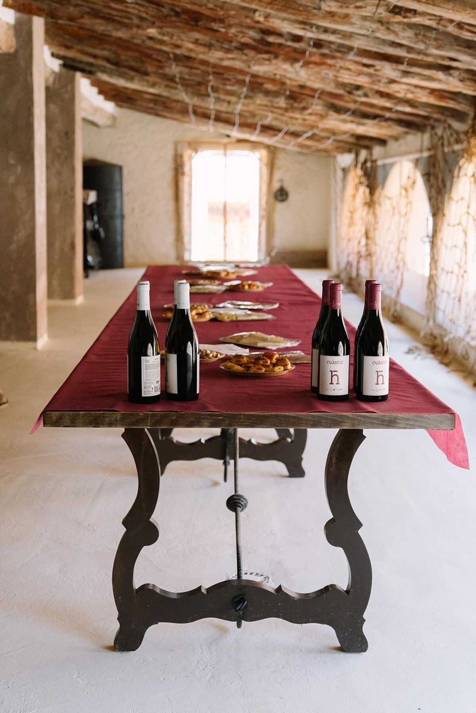
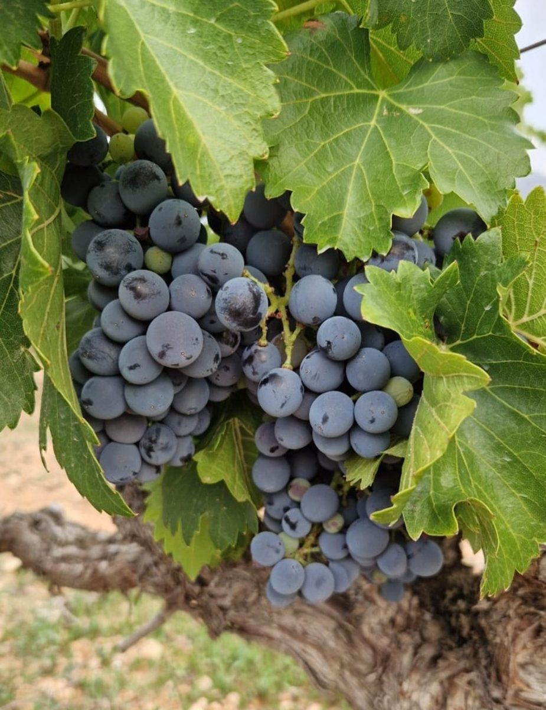
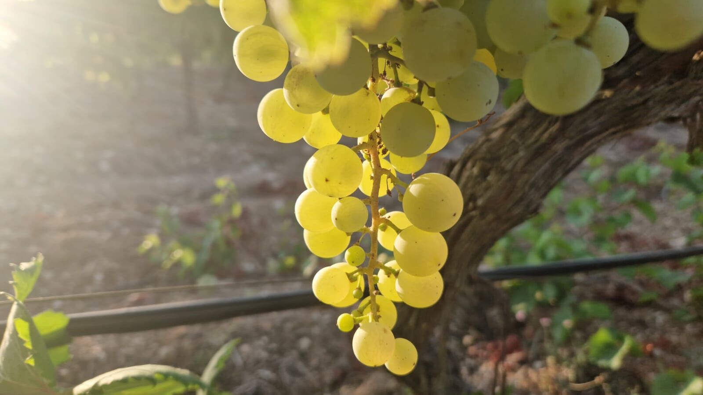
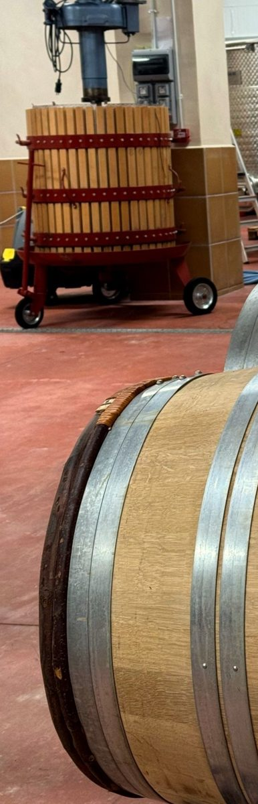
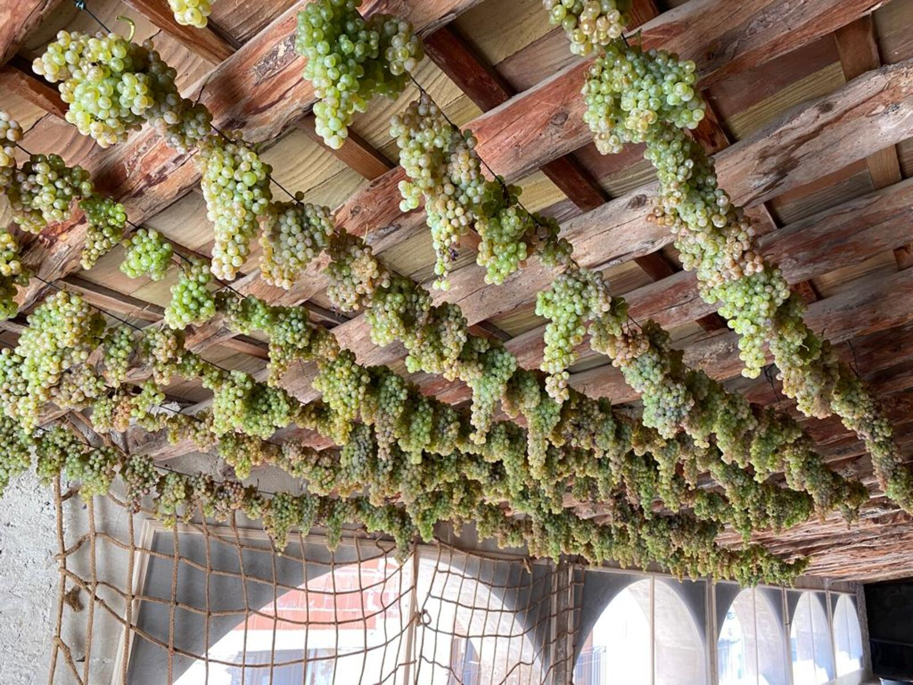
The wines
Rated by the tasting panel of Verema, November 2026 — all three above 90 points.

Quàntic · White
2025 · Garnacha Blanca
White fruit and peach on the nose, fine minerality, and a lovely tension and freshness on the palate.
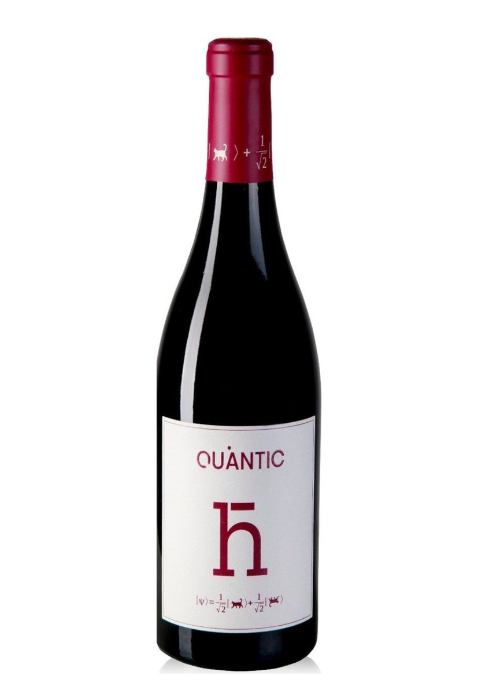
Quàntic · Red
2022–2023 · Syrah, Tempranillo, Tintorera
Peppery and spicy, very round and accessible. Give it air — it opens beautifully in a decanter.
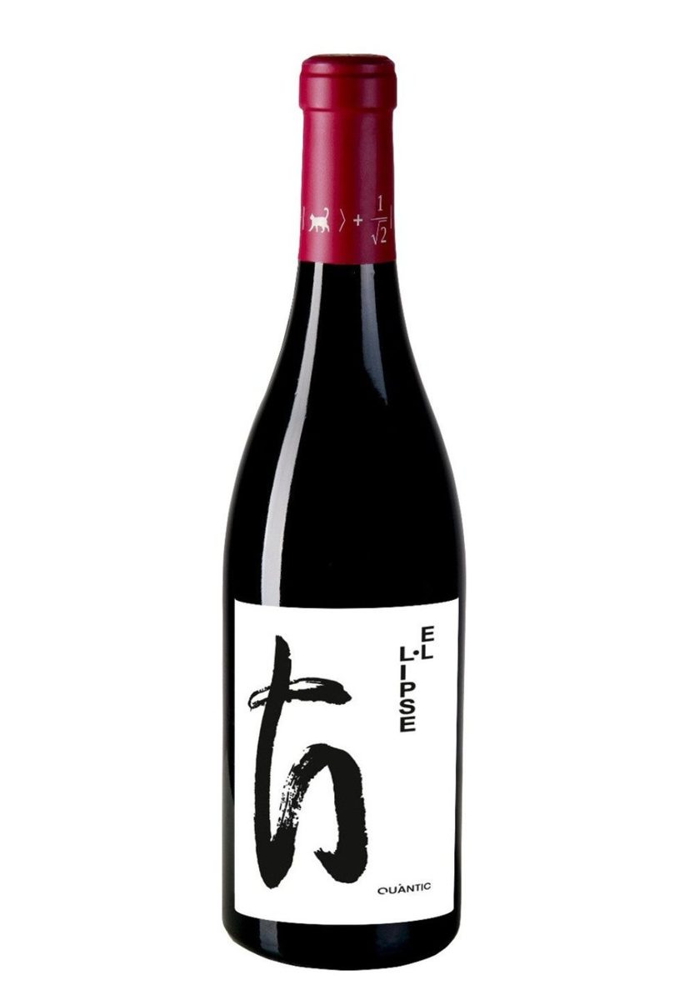
Our special red
2024–2025
A complex, very fresh nose and crisp, vivid fruit. Silky tannins and a long, persistent finish.
Tasting notes: ours, October 2026. Order from our shop or write to us.
The label
Every bottle carries — “h‑bar”, the reduced Planck constant, one of the most fundamental constants in physics. Friends and colleagues simply call ours the h‑bar wine. The symbol comes in three designs:
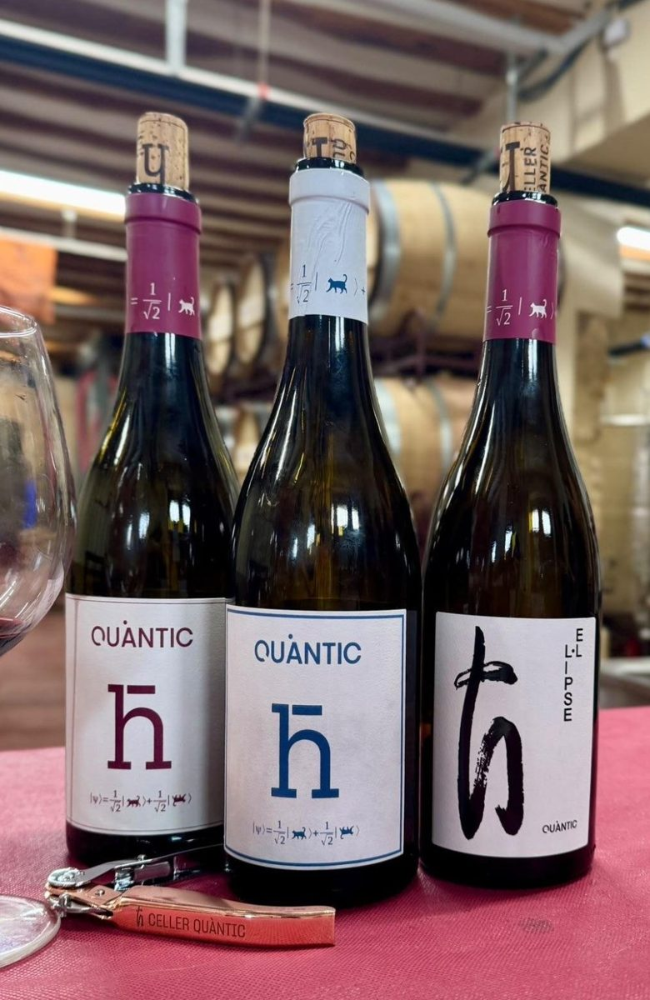
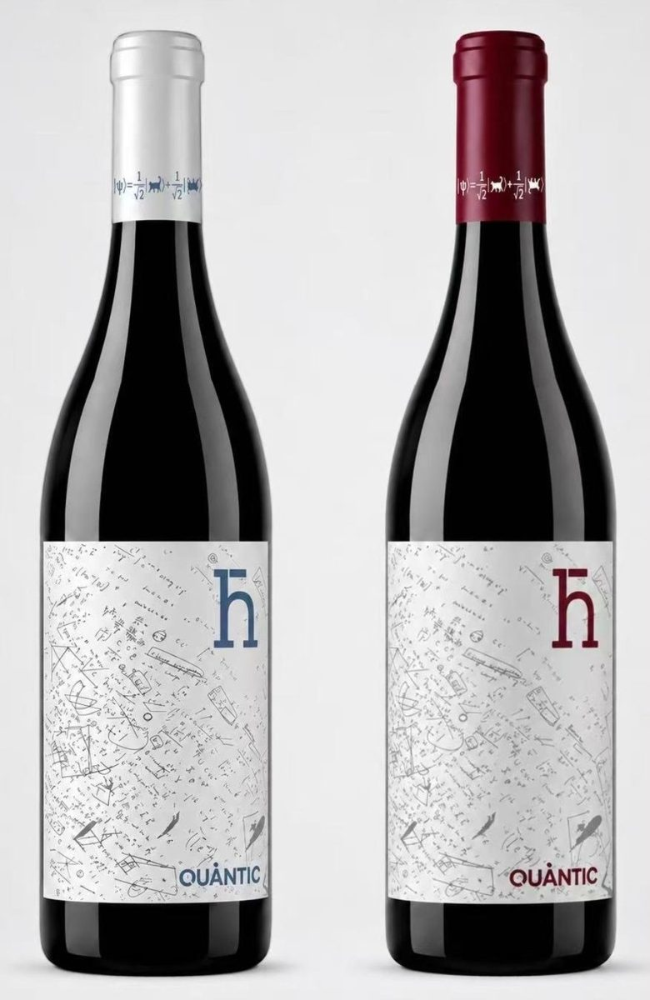
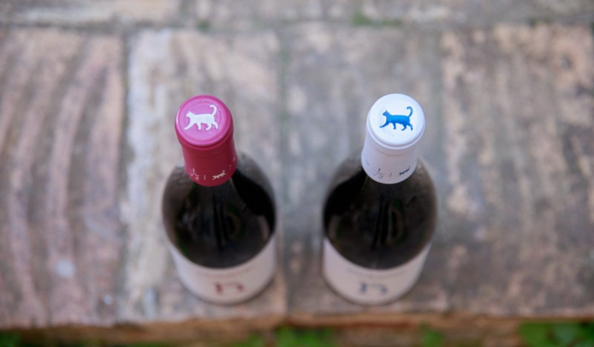
The capsule
Nearly a century after it was born, and exposed to the thought experiment, the cat has been resurrected on our capsules. Each bottle keeps its secret until it is opened: the measurement, and the final verdict, are yours.
The people
Experimental particle physicist. Runs the day‑to‑day of the winery.
“Quàntic must be an excellent wine not only in taste, but also in the social values it represents.”
Researcher in quantum computing, with a deep connection to the land.
“The beauty of wine lies in its complexity, just like physics.”
Physicist specialising in quantum cryptography.
“Making wine is a way of understanding nature… and challenging it.”
Wine lover and advocate of artisanal craftsmanship.
“It contains the light of our sun and the flavour of our land.”
Visit us
Two wines from current production, one white and one red. About 1 hour.
Two wines in production, plus a bottle of white and a bottle of red uncorked. About 1½ hours.
As above, with a visit to the vineyards in your own vehicle. About 2½ hours.
Visits by appointment — please get in touch before you come.